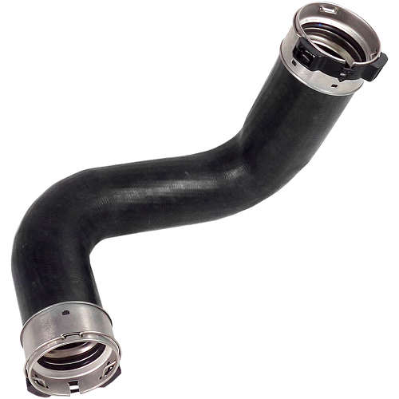

LINHA DE PRODUTOS
Mangueiras de intercooler
Componentes para condução de ar em sistemas turboalimentados.

SOLUÇÃO PARA SUA APLICAÇÃO
Encontre a peça para o seu veículo.
As mangueiras de intercooler integram o sistema de admissão de motores turboalimentados e conduzem o ar entre os componentes do conjunto. Consulte a compatibilidade para o seu veículo com nossa equipe.
Sistema de admissão
Veículos turbo
Linha leve e pesada
Imagens ilustrativas. Estoque, marcas e compatibilidade devem ser confirmados com a unidade de atendimento.
VOCÊ TAMBÉM PODE PRECISAR
Explore outras linhas.
Precisou de mangueiras? Conte com a UMA.
Fale com uma das nossas três unidades e encontre a solução para sua aplicação.